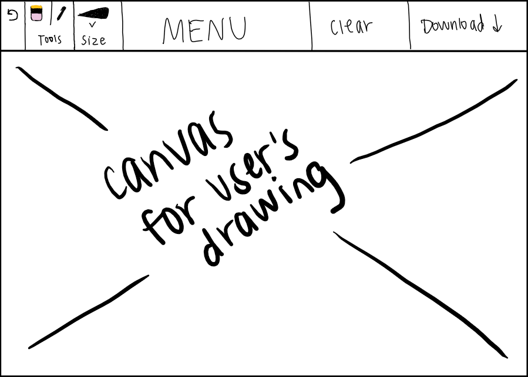
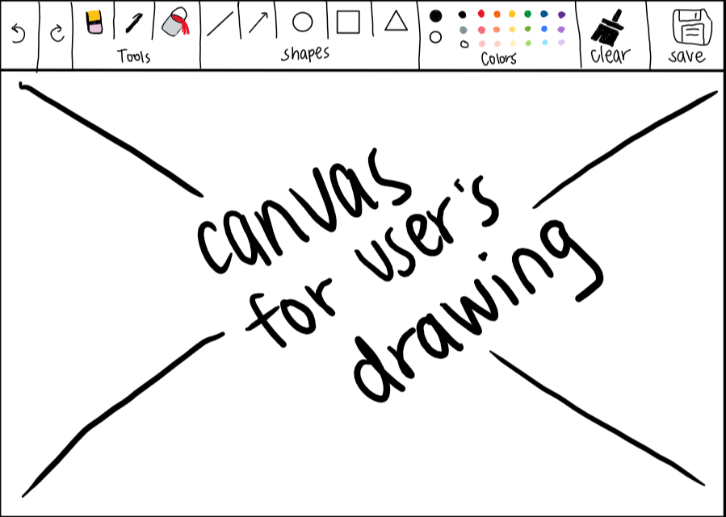

Description
For my final project, I aim to use p5.js to build a paint-like drawing app that allows
the user to download their art.
Envisioned Interface
Below I have included two drawings of my envisioned interface, in the prototype
and final stages:


Sketch of Envisioned Prototype Stage
Sketch of Final Prototype Stage
Versions of Project
Prototype Version
For the prototype version of my project, I will focus on the core features
of the app on a basic level. This means that the prototype will likely be in
grayscale and in a basic font, with only a simple draw, erase, and download
button available to the user. I plan on making the canvas white and the pen
black, with only one default pen size available in the prototype.
Final Version
For the final version of my project, I plan to focus on the aesthetics more
and implement additional features, such as typeface, color, and allowing the
user to adjust the size of the pen and eraser.
Plan
Here is my step-by-step plan for my development process:
Prototype
- I will first create an empty repository on GitHub for my project.
- Then, I will start by programming in p5.js's online editor so that
I can easily watch my output and make sure that everything is running
as expected.
- I will create an empty canvas and color it white.
- I'll add two buttons, "clear" and "download." Then I'll implement
them so that "clear" clears the entire canvas, and "download" will save
the drawing to the user's files.
- Then I'll create a variable to represent the user's pen, and track
the user's mouse with it. Whenever the user presses on the mouse, it
will draw wherever on the screen it's pressed down on.
- Lastly, I plan on adding two buttons to the prototype for "pen" and
"eraser." By default, the user will start on the "pen" setting, but by
clicking the eraser button they can switch to an eraser and erase
certain parts of their work. Then they can easily switch back and forth
by simpling clicking the "pen" button to go back to using the pen.
Final
- Firstly, I plan on including a CSS file to style some of the elements
on the page, including adding a new font for the title of the page,
colors on the page, etc.
- Then, I plan to implement sliders to adjust the sizes of the pen and
eraser.
- If I have enough time, I would love to add a few additional features
to the final project, including a "fill" feature that allows the user to
fill in certain closed areas in one solid color, a "draw-to-shape" feature
that makes it super easy for the user to draw perfect shapes, and a "text"
feature that allows the user to include text in their drawings.
Unknowns
These are a list of things I will have to figure out since I don't currently
know how to do them:
- Create buttons in p5 (like a clear or download button).
- Recognizing shapes (if the user draws a circle, how do we know it's
a circle and not a square?).
- Creating sliders in p5 to allow the user to adjust the size of pen
and eraser.
Stretch Goals
- Including a draw-to-shape feature (for example, the user draws
a circle and it adjusts it into a perfect circle).
- Allowing the user to fill in blocks of color at once.
- Allowing the user to include text in the drawing by typing.